VADODARA – THROUGH AGES
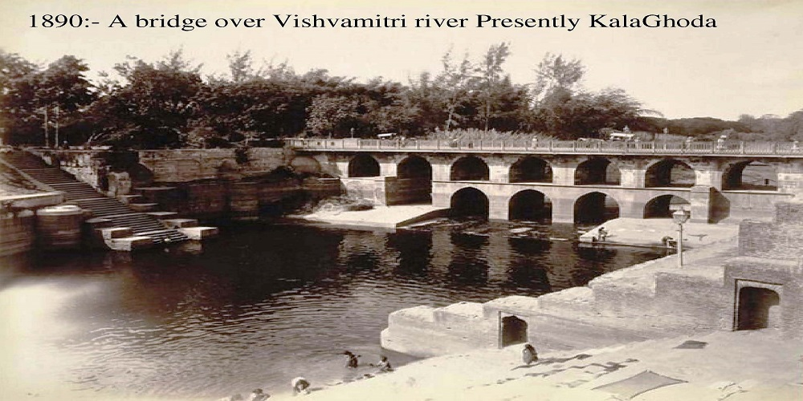
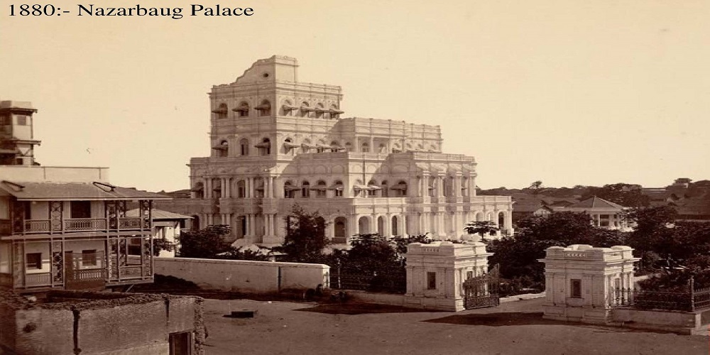
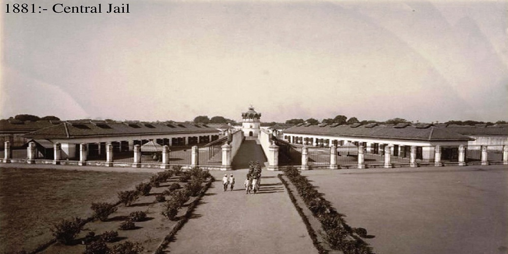
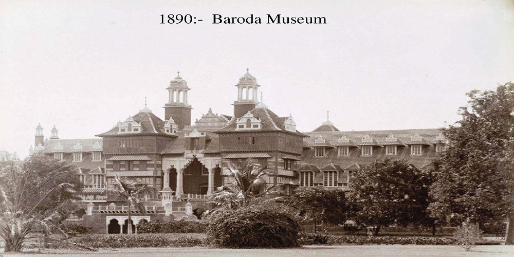
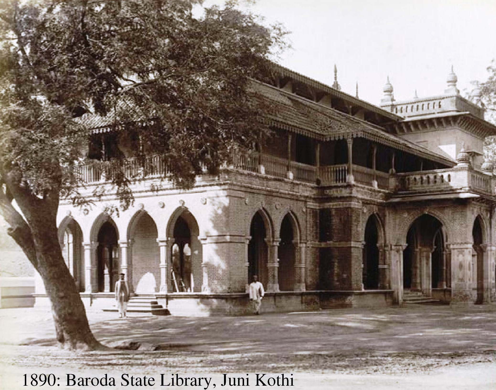
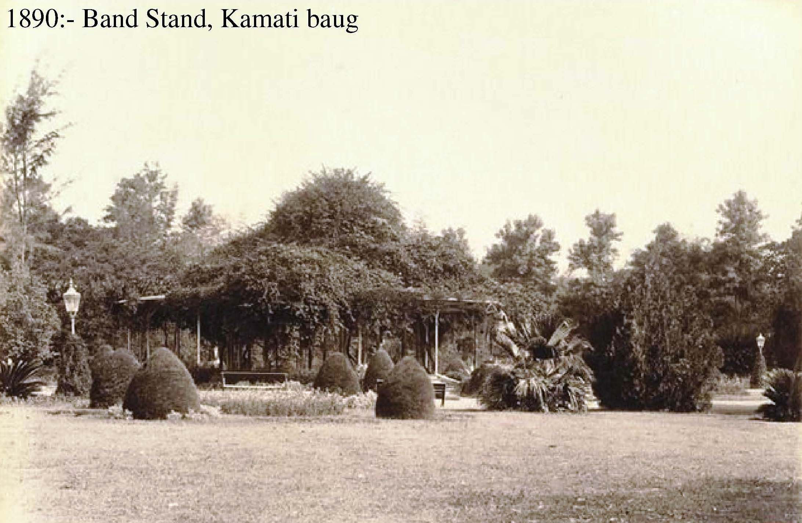
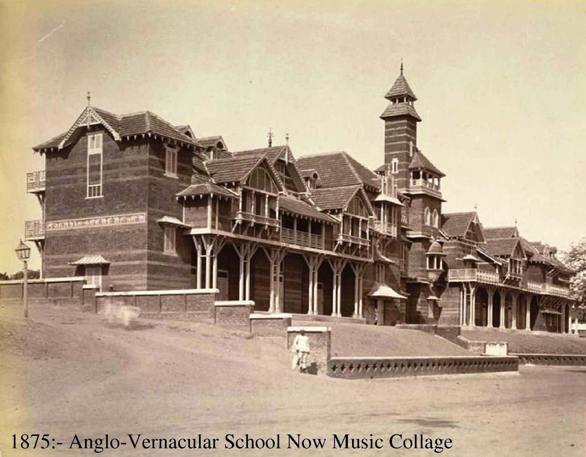
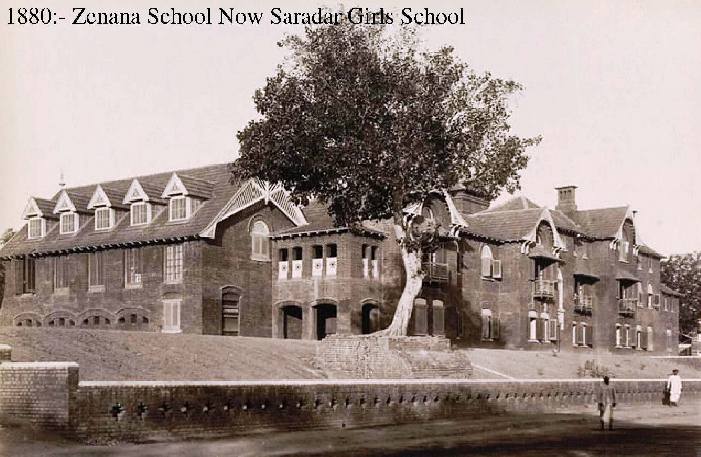
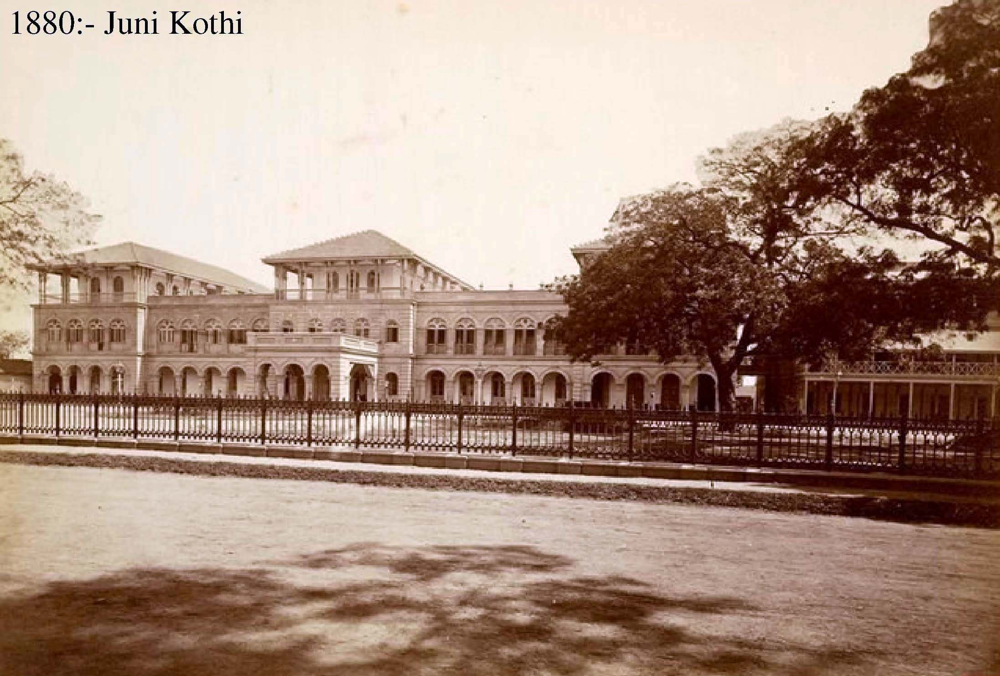
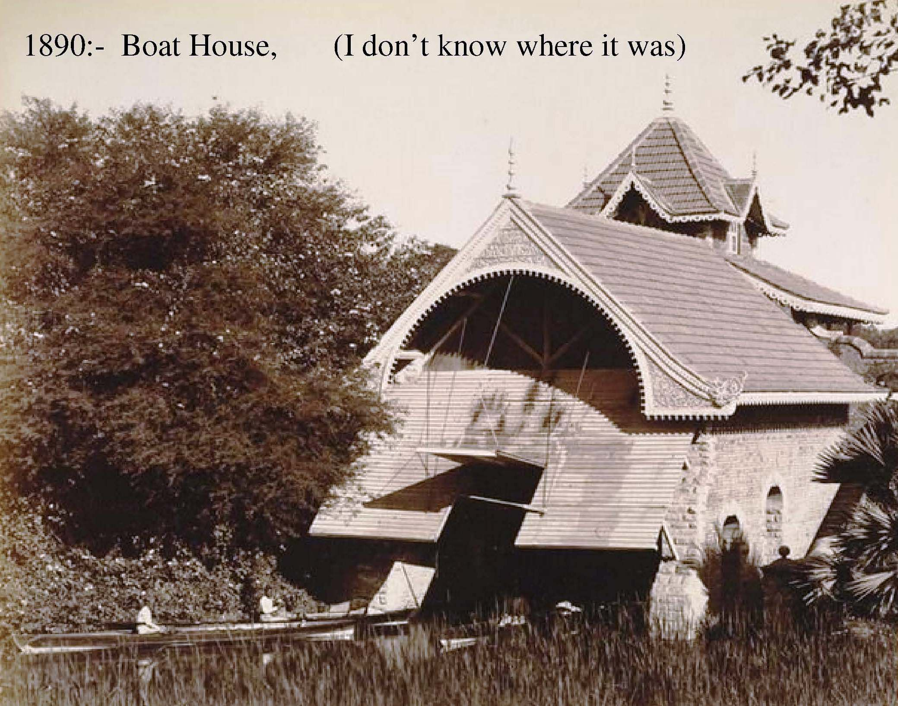
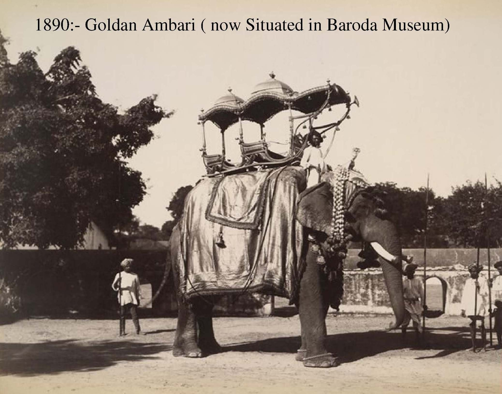
Very often known as the cultural capital of Gujarat, Vadodara may not have had a colourful history like
Calcutta of Bombay of seen the great empire builders like Delhi. But then, unlike these cities, its
history begins somewhere in the mid-pleistocene period. There are evidences of the existence of the early
man of old stone age at the Mahi River valley at a number of sites within 10 to 20 kms. To the North-East
of the present Vadodara.
Around the beginning of the Christian Era, a small township seems to have developed on the right bank of
the river Vishwamistri. It came to be known as Ankotakka (present day Akota). The township of Ankotakka
developed during the rule of the Guptas and Vallabhis. But a severe flood in 600 A.D. forced the
inhabitants to abandon the township and move away to the East of Ankotakka. This formed the nucleus of a
new township name Vadpadraka possibly due to the profuse presence of banyan tress which are comparatively
many even today. The development of Vadodara was rapid from 11th centure A.D. to 14th Century A.D. in 1500
A.D. when Vadodara was given as Jagir by Muhamad Begda, the then Sultan of Gujarat, to his son prince
Khail Khan, he built the modern fort of Vadodara. The fort was strong and well built and hence considering
the safety aspect, the inhabitants of nereby villages came and settled here. Several lakes were then
constructed. Within the next two centuries, the area adjacent to the fort also became inhabited. Vadodara
has later inhabited during the Maratha period as indicated by the coins and pottery.
For the people of Vadodara today, its history begins with Sayajirao III. Vadodara’s identity can be summed
up in its composite culture, catholicity of outlook and general enlightenment. There is a stamp of one
person on Vadodara’s identity and that person is Sayajirao III. You cannot speak of any aspect of this
city without reference to him. Vadodara’s identity is Sayajirao’s contribution. Under Sayajirao’s rule
Vadodara flourished so much so that it ranked second only to Hyderabad of Nizam among the princly states
in the country. He introduced manifold reforms which included arrangement of electricity supply in
Vadodara State, mechanization of manufacturing units, co-operative movements free and compulsory education
and introduction of prohibition.
That Vadodara is now on the cultural, educational and economic map of the country is largely owing to
Sayajirao III. Whatever heritage this city has is the legacy of this great ruler who moulded the character
of his subjects. After an illustrious life spanning over 76 eventful years, this great hero, who was
adopted at the age of 12 years by the widow of the Maharaja Khanderao, went for his heavenly adobe in
1939.
Vadodara has witnessed establishment of medium and large scale industries. With great strides in economic
field, the city has giant industrial complexes and public undertaking like Gujarat Refinery, Indian
Petrochemicals, Gujarat State Fertilizers, Heavy Water Project, Oil & Natural Gas Commission etc.
Today the city is situated on both the banks of the river Vishwamistri and is famous as cultural capital
of Gujarat and centre of educational activities. The population of the city is approx 1.9 million very
soon.